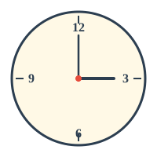
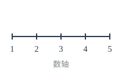
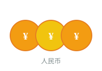
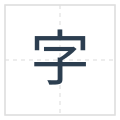

能力提升计划
选择孩子现在的年级，定制专属学习计划
选择年级
{{ g.icon }}
✓
{{ g.name }}
{{ g.desc }}
选择学习科目
可选择一个或多个科目
{{ s.name }}
{{ s.desc }}
{{ ab }}
{{ selectedSubjects.includes(s.id) ? '✓' : '' }}
定制能力项
勾选本周想要练习的能力
{{ group.icon }} {{ group.name }}
{{ isAllAbilitiesSelected(group.id) ? '取消全选' : '全选' }}
{{ ab.icon }}
{{ ab.name }}
{{ ab.desc }}
{{ isAbilityChecked(group.id, ab.id) ? '✓' : '' }}
{{ weekTitle }}
{{ store.state.stats.totalDays }}天 / {{ store.state.stats.totalQuestions }}题
{{ getDayName(day.day) }}
{{ day.date }}
{{ day.done }}/{{ day.total }}
今天
✓
{{ t.abilityName }}
{{ t.questions.length }}题
休息日
{{ getDayName(currentDayNum) }} · {{ currentDayDate }}
已完成 {{ dailyProgress.done }}/{{ dailyProgress.total }} 题
{{ getSubjectEmoji(group.subject) }} {{ getSubjectName(group.subject) }}
— {{ group.abilityName }}
{{ getTypeLabel(q) }}

 拼音：{{ q.pinyin }} · {{ q.strokes }}画
组词：{{ q.words?.join('、') }}
拼音：{{ q.pinyin }} · {{ q.strokes }}画
组词：{{ q.words?.join('、') }}




{{ q.character }}
📖 {{ q.sentence }}
{{ q.question }}
{{ q.word }}
🔊
{{ q.meaning }}
📖 {{ q.sentence }}
🔊
{{ q.english }}
🔊
📝 {{ q.chinese }}
{{ q.passage }}
❓ {{ qa.q }}
{{ q.letter }}
发音：{{ q.sound }}
例子：{{ q.example }}
🔊
拼读：{{ q.word }}
🔊
→ 读作：{{ q.reading }}
场景：{{ q.scene }}
{{ q.prompt }}
{{ q.question }}
{{ q.english }}
{{ q.chinese }}
✓{{ opt }}
请在下方输入这个字：
💡 小提示：
{{ getHint(q) }}
参考答案： {{ getAnswer(q) }}
今天没有学习任务，休息一天吧！
📊 学习报告
{{ store.state.stats.totalDays }}
学习天数
{{ store.state.stats.totalQuestions }}
完成题数
{{ store.state.stats.streakDays }}
连续打卡
本周完成情况
{{ getDayName(day.day) }}
{{ day.done }}/{{ day.total }}
🏆 成就墙
开始学习
第1天
渐入佳境
3天
坚持一周
7天
连续打卡
3天
学霸新手
50题
小学霸
100题
清除后将清空所有学习记录和数据